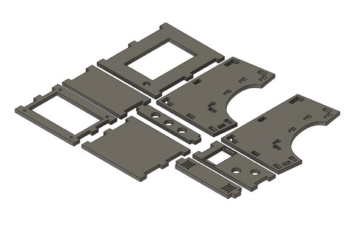
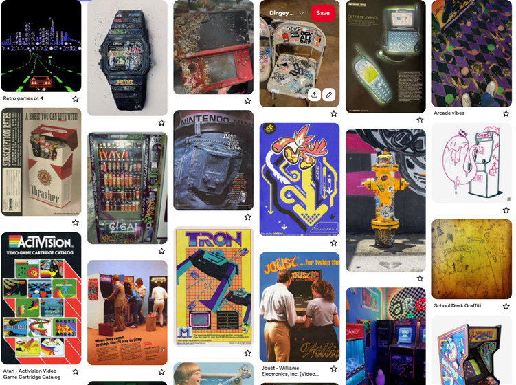
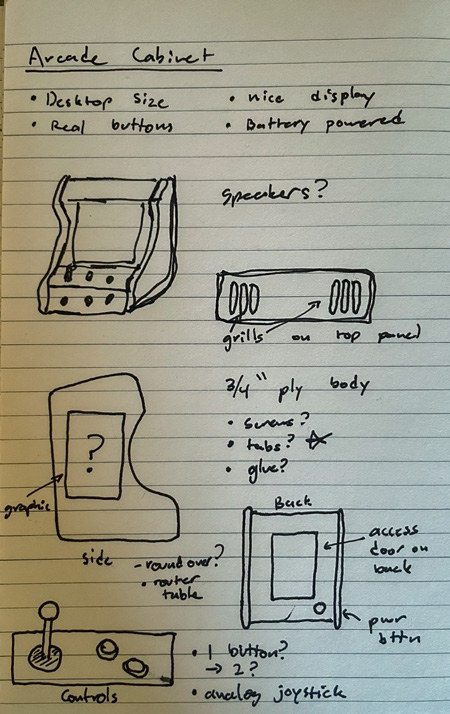
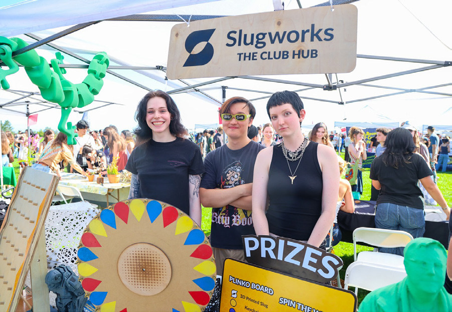

PL4Y.
A portable arcade cabinet made to bring people together—and a collaboration across design, fabrication, electronics, and games.

- Timeframe
- 3 months
- My role
- Cabinet design & electrical integration · Slugworks team project
- Materials & technology
- Tab-and-slot cabinet · Raspberry Pi 5 · 1080p display
A reason
to gather.
PL4Y was a Slugworks team project for tabling events. We wanted the feel of a real arcade machine in a cabinet that was easy to transport and could run on battery power for hours.
My primary responsibilities were designing the physical cabinet and ensuring the electrical components worked together. The games and graphics were a collaborative effort by the wider team.
Retro feel.
Practical build.
We began with a shared visual reference board, then I developed sketches and a Fusion 360 model. The cabinet uses tabs and slots rather than screws or nails to simplify assembly.
Arcade-grade controls, a 1080p display, and a Raspberry Pi 5 form the core experience. A rear opening gives access to the electronics and battery while allowing a metal cover to close the cabinet.
Regular team meetings kept the cabinet, games, and graphics aligned around a consistent design language.
Ready for
the crowd.
Powering the Raspberry Pi 5 from an external battery bank proved difficult and required additional parts ahead of Cornucopia, our first tabling event of the 2025–2026 school year.
The team connected the experience to UC Santa Cruz through six games featuring slugs and references to campus life. To keep a queue moving, we chose one-minute play sessions and prizes for high scores.




PL4Y
PL4Y turned a multidisciplinary team effort into an interactive event attraction, with a transportable cabinet and short play sessions designed to keep visitors engaged.